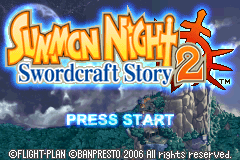

Summon Night - Swordcraft Story 2 (USA)
Stateless / Passcode
Cartridge Identity
- Game Code
BSKE(FamilyBSK)- Header Title
SWORDCRAFT2- Maker / Revision
EB/ rev0- ROM Size
- 16.0 MiB (16,777,216 B)
- Save Media
None / Unknown- SHA-256
e267f052a3f138534f198bd33992d640568f80bf807e322c85c7b4cf6dd504ac- Engine / SDK Group
comm-001(196 families)
Screenshots

Cartridge Storage Architecture: Stateless / Passcode
Zero non-volatile battery hardware: This cartridge PCB contains ROM only (no SRAM, Flash, or EEPROM chips). Progression is preserved via on-screen passcodes or session-only gameplay. No
.sav file is generated or required.
ROM Assets, Compression & Audio
- BIOS Compression
- LZ77 (
0x10): 2,578 streams · RLE (0x30): 212 streams - ROM Pointer Tables
- 78 tables (0 pointing to validated compressed streams)
- SDK Backup Tags
EEPROM_V124
Hardware MMIO Subsystems
ppu_display0x8006430,0x80100f4,0x8013d88
Regional Variants & Revisions (Family BSK)
- Summon Night - Craft Sword Monogatari 2 (Japan) (
BSKJ, 16 MiB)